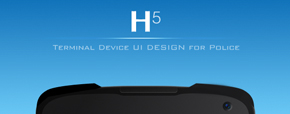
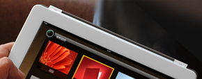
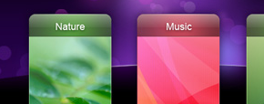
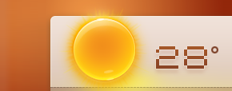
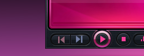

UXTIME（沐川系）为国内最专业警务系统设备商提供移动设备UI设计咨询服务。

UXTIME（沐川系）为国内最专业警务系统设备商提供移动设备UI设计咨询服务。

UXTIME(沐川系)携手DHouse共同打造一款全新智能家庭控制系统，开创国内智能家居系统体验新局面。
受海棠通信邀请，UXTIME为某公安厅警务系统进行全新体验设计，并在警务终端设计领域获多项突破。
一款Andriod系统深度定制界面，设计过程对自然交互方式分析颇多，并获得UIAward设计奖。
我们为西谷科技设计了全新加载Android系统智能家居系统界面，在2011全国行业展获高度认可。
UXTIME一直关注智能电视的发展，与知名厂商合作并提出UI概念设计方案，获得业界关注。

一款社区化的借物终端，UXTIME受邀承担其整体的用户体验设计，包含界面交互设计和工业设计。

一款基于Android系统的天气服务软件，我们将传统的天气元素与用户周边行为做了系统化设计。
UXTIME为千千静听设计一款变形金刚主题的播放器，强调刚柔结合设计理念。
国金证券再次邀请我们设计一款PC理财终端软件，打造为银行理财师提供全方位服务的交流平台。
受国金证券邀请，我们一款商务手机炒股软件，经过与行业人员反复沟通，最终顺利完成。
方案因商业原因，暂时未能公开
一款家庭在线音乐试听软件，可以自由从互联网下载歌曲，与本地歌曲库链接，歌曲随时随地得到更新。

一款为圣诞节设计的千千静听皮肤设计，承托出圣诞节的浪漫气息，得到众多用户的下载与好评。
一款基于windows的桌面软件，用户可跳过浏览器访问最新的资讯，我们承担其视觉设计任务。
酷狗科技是中国领先的数字音乐交互服务提供商，UXTIME为kugou产品提供的品牌形象全新设计。
我们为UeSpace设计一款全新表情设计，从打破的鸡蛋形象着手，表达产品对新世界的看法。